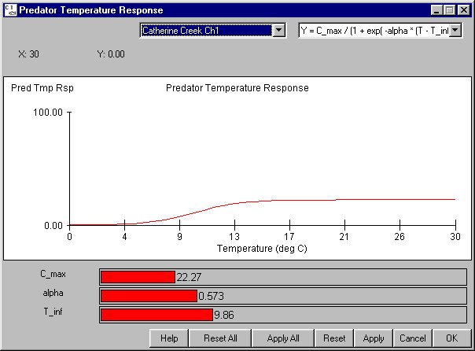

Predation Temperature Response Equation
Selecting Behavior Predation Temperature Response Equation opens a window for setting the temperature response component of predator activity which determines maximum consumption rates as a function of temperature. These functions are based on laboratory experiments. Predation mortality in COMPASS is related to predator abundance, predator temperature response, and a predator activity coefficient (see the Predation Coef section for further details). These factors combine to determine a predation rate which is applied to the smolt population on a time-step basis. There are three choices for Predation Temperature Response Equation: two exponential forms and a sigmoidal form. In the sigmoidal form (the recommended equation), the variables are as follows:
Predation Temperature Response Equation opens a window for setting the temperature response component of predator activity which determines maximum consumption rates as a function of temperature. These functions are based on laboratory experiments. Predation mortality in COMPASS is related to predator abundance, predator temperature response, and a predator activity coefficient (see the Predation Coef section for further details). These factors combine to determine a predation rate which is applied to the smolt population on a time-step basis. There are three choices for Predation Temperature Response Equation: two exponential forms and a sigmoidal form. In the sigmoidal form (the recommended equation), the variables are as follows:
- Cmax: Represents the maximum consumption rate.
- alpha: Determines the steepness of the sigmoidal.
- T_inf: Sets the inflection point temperature.
This is an Equation Input window.

Predation Temperature Response Equation window